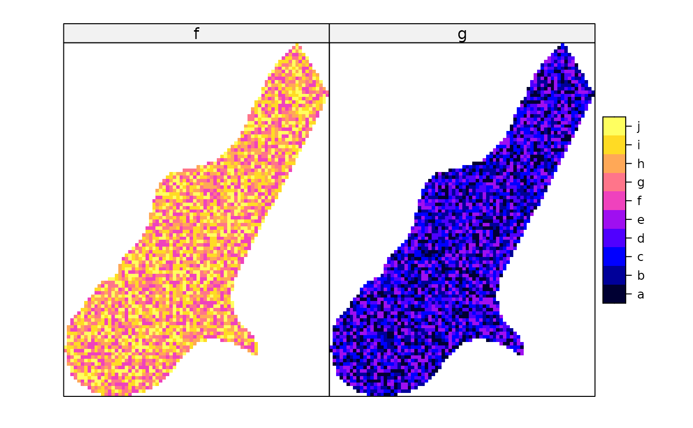

Plot methods for spatial data with attributes
spplot.RdLattice (trellis) plot methods for spatial data with attributes
spplot(obj, ...)
spplot.grid(obj, zcol = names(obj), ..., names.attr, scales = list(draw = FALSE),
xlab = NULL, ylab = NULL, aspect = mapasp(obj,xlim,ylim),
panel = panel.gridplot, sp.layout = NULL, formula, xlim = bbox(obj)[1, ],
ylim = bbox(obj)[2, ], checkEmptyRC = TRUE, col.regions = get_col_regions())
spplot.polygons(obj, zcol = names(obj), ..., names.attr, scales = list(draw = FALSE),
xlab = NULL, ylab = NULL, aspect = mapasp(obj,xlim,ylim),
panel = panel.polygonsplot, sp.layout = NULL, formula, xlim = bbox(obj)[1, ],
ylim = bbox(obj)[2, ], col.regions = get_col_regions())
spplot.points(obj, zcol = names(obj), ..., names.attr, scales = list(draw = FALSE),
xlab = NULL, ylab = NULL, aspect = mapasp(obj,xlim,ylim),
panel = panel.pointsplot, sp.layout = NULL, identify = FALSE, formula,
xlim = bbexpand(bbox(obj)[1, ], 0.04), ylim = bbexpand(bbox(obj)[2, ], 0.04),
edge.col = "transparent", colorkey = FALSE, col.regions = get_col_regions())
mapLegendGrob(obj, widths = unit(1, "cm"), heights = unit(1, "cm"),
fill = "black", just = "right")
sp.theme(set = FALSE, regions = list(col = bpy.colors(100)), ...)
layout.north.arrow(type = 1)
layout.scale.bar(height = 0.05)
spplot.locator(n = 512, type = "n", ...)
set_col_regions(value)
get_col_regions()Arguments
- obj
object of class extending Spatial-class
- zcol
character; attribute name(s) or column number(s) in attribute table
- names.attr
names to use in panel, if different from zcol names
- scales
scales argument to be passed to Lattice plots; use
list(draw = TRUE)to draw axes scales; see xyplot for full options- ...
other arguments passed to levelplot (grids, polygons) or xyplot (points)
- xlab
label for x-axis
- ylab
label for y-axis
- aspect
aspect ratio for spatial axes; defaults to "iso" (one unit on the x-axis equals one unit on the y-axis) but may be set to more suitable values if the data are e.g. if coordinates are latitude/longitude
- panel
depending on the class of obj, panel.polygonsplot (for polygons or lines), panel.gridplot (grids) or panel.pointsplot (points) is used; for further control custom panel functions can be supplied that call one of these panel functions, but do read below how the argument
sp.layoutmay help- sp.layout
NULL or list; see notes below
- identify
if not FALSE, identify plotted objects (currently only working for points plots). Labels for identification are the row.names of the attribute table
row.names(as.data.frame(obj)). If TRUE, identify on panel(1,1); for identifying on paneli,j, pass the valuec(i,j)- formula
optional; may be useful to plot a transformed value. Defaults to
z~x+yfor single andz~x+y|namefor multiple attributes; use e.g.exp(x)~x+y|nameto plot the exponent of the z-variable- xlim
numeric; x-axis limits
- ylim
numeric; y-axis limits
- edge.col
color of symbol edge
- colorkey
if FALSE, use symbol key; if TRUE, use continuous, levelplot-like colorkey; if list, follow syntax of argument
colorkeyin levelplot (see below for an example)- widths
width of grob
- heights
heights of grob
- fill
fill color of grob
- just
grob placement justification
- set
logical; if TRUE, trellis.par.set is called, else a list is returned that can be passed to trellis.par.set()
- regions
color ramp for the theme
- height
height of scale bar; width is 1.0
- n
see locator
- type
see locator
- checkEmptyRC
logical; if TRUE, a check is done to see if empty rows or columns are present, and need to be taken care of. Setting to FALSE may improve speed.
- col.regions
vector with fill colours; in case the variable to be plotted is a factor, this vector should have length equal to the number of factor levels
- value
vector with color values, default for
col.regions
Value
spplot returns a lattice plot of class "trellis", if you fail to "see" it,
explicitly call print(spplot(...)). If identify is TRUE,
the plot is plotted and the return value is a vector with row names of
the selected points.
spplot.locator returns a matrix with identified point locations;
use trellis.focus first to focus on a given panel.
get_col_regions returns the default value for col.regions
Methods
- obj = "SpatialPixelsDataFrame"
see spplot
- obj = "SpatialGridDataFrame"
see spplot
- obj = "SpatialPolygonsDataFrame"
see spplot
- obj = "SpatialLinesDataFrame"
see spplot
- obj = "SpatialPointsDataFrame"
see spplot
Note
Missing values in the attributes are (currently) not allowed.
spplot.grid, spplot.polygons and spplot.points are S4
methods for spplot; see spplot-methods.
Useful arguments that can be passed as ... are:
layoutinteger; for the layout of panels (cols,rows)
prettylogical; choose colour breaks at pretty numbers?
atspecify at which values colours change
as.tablelogical; start drawing panels upper-left instead of lower-left
pageto add marks to each plotted page
for useful values see the appropriate documentation of xyplot (in case of points), and levelplot (otherwise).
If obj is of SpatialPointsDataFrame, the following options are
useful to pass:
key.spacecharacter: "bottom", "right", "left" or "right" to denote key location, or list: see argument key in the help for xyplot what the options are
legendEntriescharacter; array with key legend (text) entries; suitable defaults obtained from data
cutsnumber of cuts, or, for objects of class SpatialPointsDataFrame only, the actual cuts to use
do.loglogical; if TRUE use log-linear scale to divide range in equal cuts, else use a linear scale if
cutsis only number of cutspchinteger; plotting character to use; defaults to 16 if fill is TRUE, else 1
cexnumeric; character expansion, proportional to default value of 1
filllogical; use filled circles?
layout.north.arrow and layout.scale.bar can be used
to set a north arrow or scale bar.
The sp.layout argument is either a single layout item, or a list
with one or more layout items. A layout item is one of
a list with one or more
Spatial*objects, along with style arguments likecol,lty,pch,filletc.a list with its first argument the layout function or the name of the layout function to be called:
sp.pointsfor SpatialPoints,sp.polygonsfor SpatialPolygons object,sp.linesfor a SpatialLines object, andsp.textfor text to place. The second argument contains the object (or text) to be plotted; remaining arguments are passed to the correspondingpanel.*functions.
The order of items in sp.layout matters; objects are drawn in the
order they appear. With respect to obj, default plot order and
precedence of sp.layout items is as follows: for points and
lines, sp.layout items are drawn over (after) obj; for
grids and polygons, sp.layout items are drawn behind (before)
obj. Transparency may further help making multiple things
visible. Adding a first argument to a layout item overrides its
default plotting order with respect to obj:
Special control elements of sp.layout items:
firstlogical; should the layout item be drawn before the
obj(TRUE), or after (FALSE)? This overrides the default order (points and lines in front, polygons and grids behind).whichinteger; controls to which panel a layout item should be added. If
whichis present in the main, top-level list it applies to all layout items; in sub-lists with layout items it denotes the (set of) panel(s) in which the layout item should be drawn. Without awhichitem, layout items are drawn in each panel.
sp.theme returns a lattice theme; use, after loading package
lattice, the command trellis.par.set(sp.theme())
after a device is opened or changed to make this work. Currently, this only
sets the colors to bpy.colors.
If the attributes to be plotted are of type factor, spplot tries to create a legend that reflects this. In this case, the color ramp passed needs to be of the same length as the number of factor levels. The factor levels are derived from the first map; subsequent factors with different factor levels result in an error.
References
Examples
library(lattice)
trellis.par.set(sp.theme()) # sets bpy.colors() ramp
demo(meuse, ask = FALSE, echo = FALSE)
l2 = list("SpatialPolygonsRescale", layout.north.arrow(), offset = c(181300,329800),
scale = 400)
l3 = list("SpatialPolygonsRescale", layout.scale.bar(), offset = c(180500,329800),
scale = 500, fill=c("transparent","black"))
l4 = list("sp.text", c(180500,329900), "0")
l5 = list("sp.text", c(181000,329900), "500 m")
spplot(meuse, c("ffreq"), sp.layout=list(l2,l3,l4,l5), col.regions= "black",
pch=c(1,2,3), key.space=list(x=0.1,y=.95,corner=c(0,1)))
spplot(meuse, c("zinc", "lead"), sp.layout=list(l2,l3,l4,l5, which = 2),
key.space=list(x=0.1,y=.95,corner=c(0,1)))
# plotting factors:
meuse$f = factor(sample(letters[6:10], 155, replace=TRUE),levels=letters[1:10])
meuse$g = factor(sample(letters[1:5], 155, replace=TRUE),levels=letters[1:10])
spplot(meuse, c("f","g"), col.regions=bpy.colors(10))
if (require(RColorBrewer)) {
spplot(meuse, c("ffreq"), sp.layout=list(l2,l3,l4,l5),
col.regions=brewer.pal(3, "Set1"))
}
#> Loading required package: RColorBrewer
meuse.grid$g = factor(sample(letters[1:5], 3103, replace=TRUE),
levels=letters[1:10])
meuse.grid$f = factor(sample(letters[6:10], 3103, replace=TRUE),
levels=letters[1:10])
spplot(meuse.grid, c("f","g"), col.regions=bpy.colors(10))

# example modifying colorkey for points:
spplot(meuse["dist"], colorkey = list(
right = list( # see ?levelplot in package trellis, argument colorkey:
fun = draw.colorkey,
args = list(
key = list(
at = seq(0, 1, .1), # colour breaks
col = bpy.colors(11), # colours
labels = list(
at = c(0, .2, .4, .6, .8, 1),
labels = c("0x", "20x", "40x", "60x", "80x", "100x")
)
)
)
)
))
l6 = list(meuse.grid["dist"], col = grey(seq(.5,.9,length.out=10)))
spplot(meuse, c("zinc", "lead"), sp.layout = l6)
spplot(meuse, c("zinc", "lead"),
sp.layout = list(meuse.grid, meuse.riv, col = 'grey'))
 # Custom legend placement, taken from
# http://stackoverflow.com/questions/29344692/custom-placement-of-spplot-legend-in-the-map
s <- spplot(meuse.grid[,'dist'], colorkey = list(space = "left", height = 0.4))
args <- s$legend$left$args$key
## Prepare list of arguments needed by `legend=` argument (as described in ?xyplot)
library(lattice) # draw.colorkey
legendArgs <- list(fun = draw.colorkey,
args = list(key = args),
corner = c(0.05,.75))
## Call spplot() again, this time passing in to legend the arguments
## needed to print a color key
spplot(meuse.grid[,'dist'], colorkey = FALSE,
legend = list(inside = legendArgs))
# Custom legend placement, taken from
# http://stackoverflow.com/questions/29344692/custom-placement-of-spplot-legend-in-the-map
s <- spplot(meuse.grid[,'dist'], colorkey = list(space = "left", height = 0.4))
args <- s$legend$left$args$key
## Prepare list of arguments needed by `legend=` argument (as described in ?xyplot)
library(lattice) # draw.colorkey
legendArgs <- list(fun = draw.colorkey,
args = list(key = args),
corner = c(0.05,.75))
## Call spplot() again, this time passing in to legend the arguments
## needed to print a color key
spplot(meuse.grid[,'dist'], colorkey = FALSE,
legend = list(inside = legendArgs))